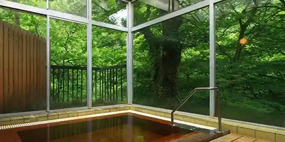
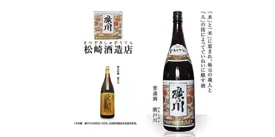
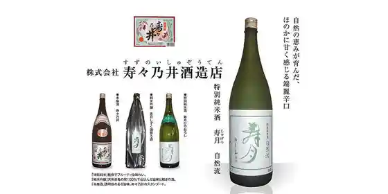

Roadside Station Hatori Mizumi Highlands
Tenei, Fukushima · 0248-85-2547 · Official / source link
Roadside Station Ki Village Tenei
Tenei, Fukushima · 0248-81-1455 · Official / source link
Buriteisshuhiruzu
Tenei, Fukushima · 0248-85-1313 · Official / source link
Tenei Onsen
Tenei, Fukushima · 0248-82-3121 · Official / source link

Matsuzaki Shuzo
Tenei, Fukushima · 0248-82-2022 · Official / source link

Hisashi Hisashi no I Shuzo Mise
Tenei, Fukushima · 0248-82-2021 · Official / source link

Enzeruforesuto Shirakawa Highlands
Tenei, Fukushima · 0248-85-2525 · Official / source link
Kobayashi Ie no Shidare Sakura
Tenei, Fukushima · 0248-82-2117 · Official / source link
Kokudo 294 Go no Sakura Namiki
Tenei, Fukushima · 0248-82-2117 · Official / source link
Okata Tera no Shidare Sakura
Tenei, Fukushima · 0248-82-2117 · Official / source link
Hatori Mizumi
Tenei, Fukushima · 0248-85-2222 · Official / source link
Tenei Furusato Bunka Densho Kan
Tenei, Fukushima · 0248-81-1030 · Official / source link
Hatori Mizumi no Autumn Leaves
Tenei, Fukushima · 0248-85-2222 · Official / source link
Ni Shi Onsen
Tenei, Fukushima · 0248-82-2117 · Official / source link
Iwase Yumoto Onsen
Tenei, Fukushima · 0248-82-2117 · Official / source link
Sukii Resort Tenei
Tenei, Fukushima · 0248-84-2501 · Official / source link
Gurandi Hatori Mizumi Sukii Resort
Tenei, Fukushima · 0248-85-2024 · Official / source link
Hatori Kohan Oto Campground
Tenei, Fukushima · 0248-85-2033 · Official / source link
Ni Kizan
Tenei, Fukushima · 0248-82-2117 · Official / source link
Ryugatsuka Burial Mound
Tenei, Fukushima · 0248-81-1030 · Official / source link
Mangan Tera
Tenei, Fukushima · 0248-81-1030 · Official / source link
Ita Koya Iseki
Tenei, Fukushima · 0248-81-1030 · Official / source link
Yumoto Yakushido
Tenei, Fukushima · 0248-81-1030 · Official / source link
Yuzen Hachiman Shrine
Tenei, Fukushima · 0248-81-1030 · Official / source link
Osato Shiro (Ushigashiro) Ato
Tenei, Fukushima · 0248-81-1030 · Official / source link
O Nabe Shrine
Tenei, Fukushima · 0248-81-1030 · Official / source link
Kisshoin no Shidare Sakura
Tenei, Fukushima · 0248-81-1030 · Official / source link